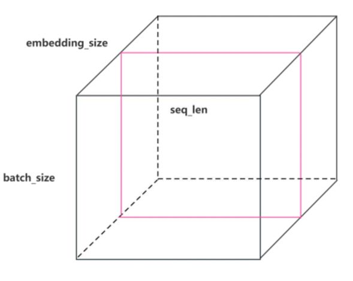
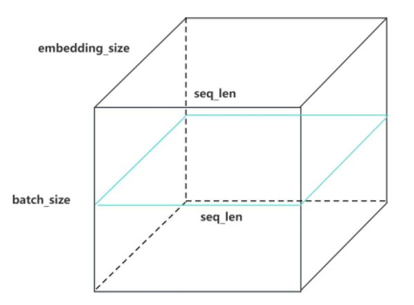

批量归一化，英文翻译以及英文简写
Batch Normalization
BN
eval() 这个代码是否禁止了反向传播和参数更新？以及为什么？
没有，因为它只是禁用 Dropout 和 Batch Normalization 的训练行为， 反向传播和 loss.backward()有关，而参数更新的执行和optimizer.step()有关。
激活函数通常用于增加非线性，
正则化层（如 Dropout 或 Batch Normalization）用于控制模型复杂度、提高泛化能力。
Batch Normalization,BN 里面，应用了什么操作？
减去均值，除以标准差，将激活标准化到均值0、方差1，然后再应用可学习的缩放和偏移系数。
Batch Normalization 会根据哪里的 那两个数据 对数据进行归一化。
每个批次的均值和方差。
BN 在深度学习里面表示什么以及？中文以及英文全称
批量归一化，Batch Normalization
Dropout 和 Batch Normalization 能否一起使用？以及为什么
可以一起使用。因为这两者解决的问题不同，并且不会相互冲突
在 NLP 模型中，eval() 模式主要禁用的是 一个还是两个，是什么？以及为什么？
仅仅 禁用Dropout。因为NLP 模型使用 Layer Normalization (LN) 而不是 Batch Normalization (BN)。
Dropout 和 批量归一化 确实解决了不同的问题：Dropout 减少过拟合，Batch Normalization 稳定输入分布和加速收敛。
Batch Normalization
在训练模式下，基于什么来进行什么操作？
基于当前批次的均值和方差进行标准化操作。
在文本处理的模型中，如果模型没有使用 Batch Normalization (BN)，而是使用 Layer Normalization (LN)，那么在 eval() 模式下，禁用的是谁以及为什么？
仅禁用了 Dropout，因为 Layer Normalization 的行为在训练和推理模式下是一致的。
正则化 方法 常用的两种是什么？
- Dropout
- 批量归一化（Batch Normalization, BN）
model.eval()
torch.no_grad()
他们两个分别禁止了什么？
- eval()：禁用训练专属的行为，如 Dropout 和 Batch Normalization 的批次统计。
- no_grad()：禁用计算图的构建。
BatchNorm（BN）和 LayerNorm（LN）
分别的适合场景是什么？
BN：适合固定大小的输入张量（如图像任务）
LN：适合变长输入张量（如 NLP 中的序列任务）
LayerNorm 函数中的 __init__(self, features, eps=1e-6) 代码里面，eps=1e-6的作用?
eps 是一个非常小的常数（通常是 1e-6），它是为了避免在标准化时除以零。标准化过程中可能会出现方差为零的情况，此时如果没有 eps，就会导致除零错误。
Batch Normalization通过将每一层的输入标准化来减轻这个问题。
BatchNorm 和 LayerNorm，谁针对单个特征维度进行归一化，谁针对所有特征维度进行归一化？
- BatchNorm 针对每个特征维度进行归一化。
- LayerNorm 针对每个样本的所有特征维度进行归一化。
Batch Normalization 是如何来加速深度神经网络训练并提高稳定性？
在训练过程中，batch normalization 层使用当前批次的均值和方差进行归一化。
批量归一化（Batch Normalization）层 是针对谁，怎么样？
需要在一个批次的数据上计算均值和方差
Transformer 使用 BatchNorm 的归一化 ，为什么归一化结果不准确？
填充值会干扰有效 Token 的分布。
Transformer 里面，LayerNorm 与 什么 配合使用，可以完全屏蔽填充值的影响？
Padding Mask，填充掩码。
Layer Normalization 的标准化步骤确实是先 减去均值，然后 除以标准差，从而使得谁具有什么效果？
使得每个位置的输出数据具有均值为 0 和方差为 1。
LayerNorm 函数中的 __init__(self, features, eps=1e-6)中，features 是指什么？
输入数据的特征维度（即要进行标准化的维度）。如果输入数据是一个形状为 (batch_size, seq_len, d_model) 的张量，那么 features 就是 d_model，表示每个位置的表示（词向量）维度。
Transformer 使用 LayerNorm 还是 BatchNorm？
LayerNorm 。
当你调用 model.eval() 时，PyTorch 会自动将哪两个层切换到评估模式
所有 dropout 和 batch normalization 层
【面试题】Transformer 里面，为什么使用LayerNorm 而不是 BatchNorm？
因为 NLP 里的句子长度不一样，短句会被填充（padding）。
BatchNorm 要依赖 mini-batch 的统计量，填充值会干扰均值和标准差的计算/统计计算，影响归一化结果，导致归一化不准确。
而 LayerNorm 是对每个句子单独归一化，只考虑每个句子自身的特征，不受填充值影响。这样就避免了填充带来的问题，更适合 NLP 的场景。
Layer Normalization 层归一化，是简单的标准化吗？
不仅仅是简单的归一化。我们还引入了 缩放因子（a_2） 和 偏置项（b_2）。
LayerNorm 的归一化是否会受到填充值的干扰？
不会。
Transformer结构里面，每个子层后都有一组什么和什么的组合操作？
Add & Norm
残差连接（Residual Connection），即输入直接加到输出上，然后进行层归一化（Layer Normalization）。
残差连接和层归一化（Residual Connections and Layer Normalization）
分别的作用是什么？
1 防止梯度消失，
2 促进信息流动，加速收敛。
Layer Normalization（层归一化）中：
偏置项，的作用是什么？
对数据分布进行平移，用于调整标准化后数据的 均值。
Layer Normalization 中谁调整数据的尺度，以及谁调整数据的均值。
a_2 是 缩放因子，调整数据的尺度。b_2 是 偏置项，调整数据的均值。
“Add & Norm”指的是Transformer模型中的两个连续操作，分别是什么
残差连接（Residual Connection）和层归一化（Layer Normalization）
Layer Normalization（层归一化）中：
包含哪两个重要的数值，以及作用是什么？
a_2 缩放因子，调节数据的 方差（尺度）。b_2 偏置项，调整数据的 均值（位置）。
LayerNorm 则是针对每个句子单独计算特征维度的均值和标准差，是否依赖 batch？
不依赖。
Layer Normalization 层归一化，包含了标准化，但是呢，为什么还要包含缩放（a_2） 和 偏移（b_2）额外操作呢？
标准化后数据的均值变为 0，方差变为 1，这个会导致数据分布比较固定，缺乏灵活性。而额外的缩放和偏移呢可以让模型自动学习每一层的最佳的分布，进而均值和方差可以根据不同的任务的需求来进行动态调整。
在训练模式 和 评估模式下，dropout层 和 batch normalization层各自的区别是什么？
- 在训练模式下，dropout层会随机丢弃一些神经元以防止过拟合，batch normalization层会使用当前批次的数据统计量。
- 在评估模式下，dropout层不会丢弃神经元，batch normalization层会使用训练过程中累积的全局统计量。
残差连接和层归一化（Residual Connections and Layer Normalization）
作用：改善模型的训练效果和稳定性。
如何实现？
在子层输出加上输入，然后进行归一化处理。
Batch Normalization（批归一化，简称BN）
Transformer代码里面，self.sublayer = clones(SublayerConnection(size, dropout), 2)
SublayerConnection 的作用是将什么封装起来？
Add & Norm 。
Layer Normalization（层归一化）中：
缩放因子，作用是什么？
用于调整标准化后数据的 方差/尺度。
Batch Normalization 是针对 哪里 中 什么进行归一化的，而 Layer Normalization 是针对哪里的 什么进行归一化。
mini-batch，每个特征维度。
每个样本序列，所有特征维度。
Layer Normalization（层归一化）中：
a_2 用来缩放数据的什么，b_2 用来平移数据的什么？
方差，均值。
model.eval() 方法将模型切换到什么模式，这会影响模型中的哪些层的行为？
评估模式， dropout层和batch normalization层。
Layer Normalization 层归一化，谁是可训练的参数，以及分别的作用？
a_2 和 b_2 是可训练的参数，用于控制输出的 尺度 和 平移【缩放因子对应的是调整方差，偏置项对应的是调整均值。】
如图所示，属于BatchNorm 还是 LayerNorm ，以及为什么？

BatchNorm ，因为BatchNorm 针对每个特征维度进行归一化。
Output=LayerNorm(x+Sublayer(x))
这个公式表述了什么过程？
残差连接和层归一化。
对每个子层，输出与输入相加，然后进行层归一化。
RNNs模型里面，Layer Normalization 是否会破坏时间步之间的依赖关系，以及为什么？
不会，因为是在每个时间步都进行归一化
一个立方体，三个维度分别是batch_size，seq_len，以及 embedding_size，绘制LayerNorm 的可视化图？

LayerNorm 是否与 mini-batch 的大小有关，以及为什么？
无关，因为单个序列为单位。
只对单个样本的特征维度进行归一化，不依赖于其他样本。
BatchNorm 的归一化在 NLP 中，变长序列的填充值是否会干扰统计量？
是。
残差连接和层归一化 的英文
Residual Connections and Layer Normalization
Batch Normalization 是针对 哪里 中 什么进行归一化的?
mini-batch，每个特征维度。
self.sublayer[0] 负责执行 Add & Norm 操作，它将输入 x 和 self.self_attn(x, x, x, target_mask)作为输入【代码】
x = self.sublayer[0](x, lambda x: self.self_attn(x, x, x, target_mask))
Layer Normalization 的标准化步骤 有那四个步骤？
先 减去均值，然后 除以标准差差，以及缩放和偏移。
Layer Normalization 的作用是以便模型能更好地调整什么？
每一层的输出。
为什么在NLP 里面，BatchNorm 不合适？
但在 NLP 中，句子长度不同，需要填充值，BatchNorm 会受到这些填充值的干扰。
填充项会干扰归一化的计算。
Layer Normalization 的标准化步骤确实是先 执行什么操作，然后 再怎么样，从而使得每个位置的输出数据具有均值为 0 和方差为 1
减去均值， 除以标准差。
LayerNorm 的归一化是针对 什么范围 内的 什么进行归一化？
针对 单个样本的所有特征维度，它在 每个样本的特征维度范围内 计算均值和标准差。
BatchNorm（BN）和 LayerNorm（LN）
谁会受到填充（padding）影响？
BN：填充值干扰统计量，导致归一化不准确。
LN：不受填充值影响，天然适配序列任务。
Layer Normalization 是针对哪里的 什么进行归一化？
每个样本序列，所有特征维度。
如图所示，属于BatchNorm 还是 LayerNorm ，以及为什么？
LayerNorm ，单个样本，整个序列，所有特征维度进行归一化。
model.eval() 这行代码的作用是什么？【切换到什么模型，关闭了哪两个环节】
切换模型到评估模式 ，关闭 Dropout 和 BatchNorm
一个立方体，三个维度分别是batch_size，seq_len，以及 embedding_size，绘制BatchNorm 的可视化图？
Batch Normalization 的中文名称
（批归一化）
Batch Normalization 层，在训练以及评估，这两种模式下的行为是什么？
Layer Normalization 中，a_2 和 b_2 是可训练的 缩放因子（scale） 和 偏置项（bias）,分别用于控制归一化后数据的什么和什么？
尺度和位置，也就是方差和均值。
在Transformer模型中，Add & Norm层由两个部分组成，分别是什么名称以及作用？
残差连接，将输入加到输出上
层归一化，对一层的数据进行标准化。
- Add（加法）：这是指残差连接（Residual Connection），即将子层的输入与输出相加。
- Norm（归一化）：这是指层归一化（Layer Normalization），对相加后的结果进行标准化处理。
Transformer 里用 BatchNorm，为什么会导致统计结果不准确？
填充的 padding 会影响统计结果，导致归一化不准确。
Transformer 使用LayerNorm 的归一化 是否与句子长度和填充值有关？以及为什么？
无关，因为针对的是单个样本的所有特征维度，单个的序列为单位。
BatchNorm 的归一化是针对 什么范围 内的每一个什么进行归一化？
mini-batch，特征维度。
为什么Batch Normalization 在 RNN 中确实不是很有效？
RNNs 处理的是序列数据，每个时间步的数据都依赖于前一个时间步的输出。Batch Normalization 在每个时间步都会计算均值和方差，这可能会破坏时间步之间的依赖关系，从而导致模型表现不稳定。
BatchNorm（BN）和 LayerNorm（LN）
均值和标准差的计算的范围是什么？
- BatchNorm（BN）：在整个 mini-batch 中计算其中一个维度。
- LayerNorm（LN）：在单个样本序列的所有特征维度范围内计算。
Transformer代码里面，Add & Norm 操作被封装在 哪个类中？
SublayerConnection 。子层连接结构。
在Transformer模型中，Add & Norm层
Norm 指的是什么？
- Norm（归一化）：这是指层归一化（Layer Normalization），对相加后的结果进行标准化处理。
Layer Normalization ，是如何避免了时间步之间依赖关系的破坏
单独对每个时间步的隐藏状态进行归一化
Transformer 使用 BatchNorm 的归一化 ，什么会干扰有效 Token 的分布，导致归一化结果不准确？
填充的token【填充项】
BatchNorm 是在 什么的范围内，对什么维度归一化？
整个 mini-batch 的范围，每个/单个特征维度。
Layer Normalization 对什么进行归一化？
每个时间步 t 的隐藏层
Layer Normalization（层归一化）中：
缩放因子，为什么可以调整标准化后数据的 方差？
缩放因子可以调整数据的扩展性，即 放大 或 缩小 数据的分布/尺度，而数据的分布对应的就是方差。
Layer Normalization对 什么 进行规范化，稳定什么？
每一层的输出
数据分布
LayerNorm 则是针对谁单独计算特征维度的均值和标准差 ？
每个句子/序列。
针对 Batch Normalization 在序列模型中的局限性 的替代方案是什么？
Layer Normalization（层归一化）
Batch Normalization 在 RNN 中，是否是有效的方法？
Batch Normalization 在 RNN 中确实不是很有效，而 Layer Normalization 是主流的方法之一
在模型测试时务必使用 model.eval()，原因是什么
避免 dropout 和 batch normalization 层 【批归一化】 在测试时引入不确定性
Layer Normalization 中，哪两个参数可以在训练过程中学习到，以便模型能更好地调整每一层的输出。
a_2 和 b_2 是可训练的 缩放因子（scale） 和 偏置项（bias），它们分别用于控制归一化后数据的尺度和位置。